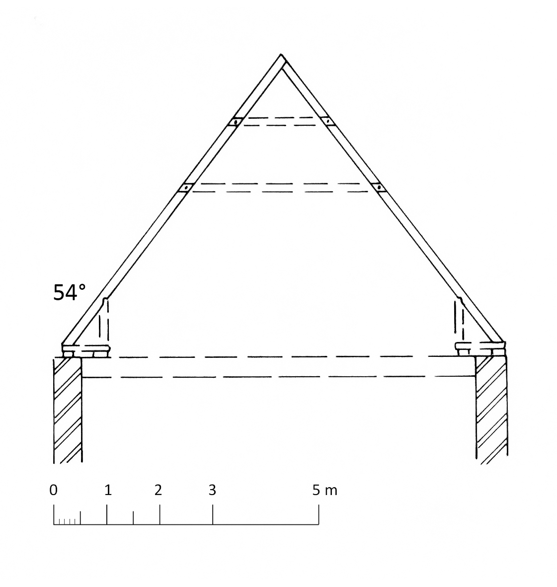
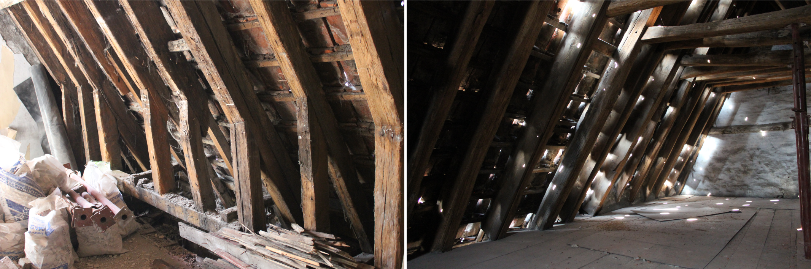

6 sporenkappen zonder langsverbinding
6.1 sporenkappen zonder langsverbinding, met enkele muurplaat
6.1.1 Spinolarei 16, huis ’t Vaeghevier
De 38 sporenparen rusten koud op de enkele muurplaat1. De sporen hebben een rechthoekige sectie (7,5 x 16 cm tot 10 x 18 cm) en staan hart op hart gemiddeld 60 cm uiteen. Elk sporenpaar bezit twee hanenbalken die halfhouts opgespijkerd zijn, echter niet altijd aan dezelfde zijde van de sporen. De getrokken telmerken bevinden zich op de sporen en de hanenbalken. Achteraan het westelijk dakvlak bevinden zich de resten van een oorspronkelijke dakkapel2.
In een latere periode werden zes schaargebinten met flieringen, makelaars en een nokgording in de kap ingebracht. Deze kap bleef behouden bij de recente renovatie en verbouwing van dit pand.

In 2002 werden uit deze dakkap zeven boorkernen genomen voor een dendrochronologisch onderzoek, waarvan er vier een middelcurve opleverden. Vergelijking met referentiekalenders laat toe de jongste gemeten jaarring zonder twijfel in 1260d te dateren. Dit betekent dat, afhankelijk van het geschatte aantal ontbrekende ringen, de veldatum van het hout kan gesitueerd worden tussen 1261 en 1275d3.
6.1.2 Sint-Jansstraat 15, huis Oudt Inghelandt, westvleugel
De westvleugel van dit grote huis behoort tot de oudste kern uit het begin van de 13de eeuw die op het einde van de 13de eeuw een eerste verbouwing kende4. Tot deze bouwperiode behoort het centrale deel van de huidige dakkap op deze vleugel. Zij bestaat uit twaalf sporenparen waarvan er nog vier voorzien zijn van twee hanenbalken die met een pen-en-gat verbinding zijn vastgemaakt. De sporen bezitten een uitgesproken rechthoekige doorsnede. De getrokken telmerken op negen van de twaalf sporenparen (reeksen 3 tot 8 en 12 tot 15) tonen aan dat zij zich niet meer in de oorspronkelijke volgorde bevinden.
6.1.3 Spiegelrei 24, huis Ten Walle, later Den Ancker
Onder het huidige huis Spiegelrei 24 schuilen twee diephuizen waarvan het meest noordelijke pand vermoedelijk dateert uit de tweede helft van de dertiende eeuw5. De bestaande dakkap van dit huis is betrekkelijk recent, maar bevat veel hergebruikmateriaal uit een middeleeuwse sporenkap. Op basis van de bewaarde elementen (zeven sporenparen in de oorspronkelijke toestand) kan deze gereconstrueerd worden als een sporenkap waarin elk sporenpaar door twee hanenbalken was verbonden. De verbindingen waren halfhouts. Er zijn geen aanwijzingen voor blokkelen en stand-zonen, wat betekent dat de daksporen rechtstreeks op de muurplaat rustten. De daksporen hebben een uitgesproken rechthoekige sectie.
Op een aantal andere daksporen waren inkavelingen voor een derde en soms vierde hanenbalk aanwezig. Ook uit andere gegevens kan afgeleid worden dat de oorspronkelijke kap minstens één keer werd herplaatst en aangevuld, en er dus minstens twee bouwfasen zijn.
Het dendrochronologisch onderzoek van acht elementen uit de dakkap suggereert de aanwezigheid van twee bouwfasen. Van een eerste boorkern is de terminus post quem voor de kapdatum 1248d, terwijl die voor een tweede staal 1309d bedraagt6. Aangezien dit enkel de vroegst mogelijk datering aangeeft, kan dit niet rechtstreeks vertaald worden naar een datering voor beide bouwfases. Deze dateringen suggereren enkel dat de eerste bouwfase zich situeert in de tweede helft van de 13de eeuw en de tweede in de eerste helft van de 14de eeuw. Dit is niet in tegenspraak met de datering zoals die kan worden afgeleid uit de afmetingen van de bakstenen in het pand. Het waargenomen formaat 28 x 6 cm wijst op een bouwfase in de periode 1260-1300, terwijl het formaat 25 x 5 cm een bouwfase in ongeveer 1300-1340 aanduidt.
6.1.4 Genthof 33, huis Den Gouden Schaar
De dakkap van dit huis ontstond door de inbreng van schaargebinten en flieringen in een oudere, sporenkap met twee halfhouts verbonden hanenbalken7. Dit gebeurde waarschijnlijk in de 17de eeuw, toen de houten straatgevel werd vervangen door de bestaande bakstenen gevel en het huis achteraan ongeveer 4 m werd ingekort, en een nieuwe achtergevel werd opgetrokken.
Voor de verbouwing in de 17de eeuw bestond de dakconstructie uit een sporenkap met twee hanen-balken per sporenpaar. De hanenbalken zijn halfhouts opgenageld. Er werden geen sporen aangetroffen van een voetraveling. Opvallend is de uitgesproken rechthoekige doorsnede (5 x 14 cm) van deze daksporen, die voorzien zijn van getrokken telmerken die oorspronkelijk in drie reeksen waren aangebracht. Door de inkorting van de kap bleven slechts twee reeksen bewaard (3 tot 12 en 1 tot 18). De overgrote meerderheid van de daksporen en hanenbalken zijn gemaakt uit naaldhout, maar er zijn ook eiken houtstukken aanwezig waarop soms bijkomende telmerken of inkavelingen voor anders geplaatste hanenbalken aanwezig zijn. Het is dan ook aannemelijk dat de eiken balken afkomstig zijn uit de oudste dakconstructie die in een latere periode herplaatst en aangevuld werd met naaldhouten balken.
Het aangetroffen baksteenformaat (29,5 x 6,5 cm) laat toe om de bouw van het oorspronkelijke huis te dateren in ongeveer 1260-1300. Deze veronderstelling werd bevestigd door het dendrochrono-logisch onderzoek van een oorspronkelijke moerbalk, die vrij nauwkeurig tussen 1263 en 1281 kon worden gedateerd8. De afgeronde vorm van de onderzochte balk doet ons echter vermoeden dat de buitenste groeiring die werd opgemeten niet ver van de wankant9 af zit. Daardoor zijn er naar alle waarschijnlijkheid slechts enkele spintringen verwijderd bij het vormgeven van de balk. De veldatum ligt daardoor dus eerder dichter tegen 1263 aan dan naar de bovengrens van het dateringsinterval.
6.1.5 Steenstraat 20, huis In Slype
Afgaande op de afmetingen van de bakstenen (28 x 6 cm) werd in de periode 1260-1300 een woning uit het begin van de 13de eeuw uitgebreid of vervangen door een nieuw huis10. Dat was door een brandmuur verdeeld in een voor- en een achterhuis. Hiervan bleef enkel het voorhuis gedeeltelijk bewaard. In de huidige dakkap bleven twee oude sporenkappen bewaard. Het oudste en waarschijnlijk nog oorspronkelijke deel bestaat nu uit vijf sporenparen tegen de achtergevel die door drie hanenbalken waren verbonden. De verbinding tussen sporen en hanenbalken, waarvan slechts enkele bewaard bleven, was halfhouts. De sporen hebben een uitgesproken rechthoekige sectie en vertonen duidelijke brandsporen.
Na de brand werd de dakkap grotendeels vernieuwd (zie 8.3.1) en bleven enkel deze vijf sporenparen als getuigen achter. De kapconstructies werden nog niet dendrochronologisch onderzocht.
6.1.6 Sint-Salvatorskathedraal, noordelijke kooromgang en Catharinakapel
Door een grote brand in de kerk in 1839 zijn de oude kapconstructies grotendeels verloren gegaan11. Boven de vierde travee van de noordelijke kooromgang bevindt zich wel nog een dwarsgerichte sporenkap die ook over de Catharinakapel is doorgetrokken. Deze zeer eenvoudige bekapping, waarin elk sporenpaar door slechts één hanenbalk is verbonden, wordt door Luc Devliegher op het einde van de 15de eeuw gedateerd12.
6.2 sporenkappen zonder langsverbinding, met dubbele muurplaat of voetraveling
6.2.1 Sporenkappen zonder langsverbinding, met dubbele muurplaat of voetraveling, en hanenbalken
6.2.1.1 Spanjaardstraat 16, huis de la Torre
Van het oorspronkelijke 13de-eeuwse huis is weinig bewaard gebleven13. Het huidige uitzicht gaat voornamelijk terug op een verbouwing in de 15de eeuw toen het huis voorzien werd van een hoge natuurstenen schermgevel. In de huidige dakkap behoren de meeste daksporen echter tot de oorspronkelijke sporenkap uit de 13de eeuw. Zij vertonen een uitgesproken rechthoekige doorsnede (10 x 17 cm en 11 x 20 cm). De verbindingen van de twee hanenbalken en de standzonen met de sporen waren alle van het pen-en-gat type, vastgezet met een houten toognagel. Vrijwel alle hanenbalken zijn ooit vervangen, waarschijnlijk bij de 15de-eeuwse verbouwing. Van de oorspronkelijke voetraveling zijn in de sporen enkel de inkavelingen voor de standzonen bewaard gebleven. Er zijn 22 sporenparen. De sporen staan hart op hart 65 cm uiteen.
Van de zes genomen boorkernen uit evenveel sporen kon met vier jaarringreeksen een middelcurve berekend worden, die een zeer goede overeenkomst vertoont met de geraadpleegde referentiekalenders. De jongste gemeten jaarring dateert uit 1226d. Een schatting van het ontbrekende aantal spinthoutringen leert ons dat de veldatum van het eikenhout te situeren is tussen 1227 en 1267d14.
6.2.1.2 Onze-Lieve-Vrouwekerk, schip (oorspronkelijke opstelling)
Van de oorspronkelijke kap van het binnenwerks 26,1 m lange en 10,45 m brede middenschip bleven de 41 sporenparen en de hanenbalken (Fig. 6.6: A) nagenoeg intact bewaard. De getrokken telmerken lopen op van west naar oost. Later werd in deze kap eerst een hanenbalkfliering met makelaars (Fig. 6.6: B) en later flieringen op schaargebinten ingebracht15 (zie ook: 7.2.1).
De oorspronkelijke voetraveling (Fig. 6.6: B) verdween toen het middenschip omstreeks 1400 een borstwering kreeg en een nieuwe kroonlijst en goot werden gebouwd. Het enige overblijfsel van deze voetraveling zijn de schuine inkavelingen onderaan de ongeveer 60 cm ingekorte daksporen waarin de standzonen waren vastgemaakt. De daksporen hebben een doorsnede van gemiddeld 18 x 16 cm en zijn halfhouts verbonden met de twee hanenbalken. Deze halfhoutse verbinding heeft de vorm van een halve zwaluwstaart en is vastgezet met een houten toognagel en smeedijzeren nagels.

Uit de tien genomen boorkernen kon moeiteloos een middelcurve worden berekend die een zeer duidelijke overeenkomst vertoont met de beschikbare referentiekalenders. De jongste geregistreerde jaarring dateert uit 1239d. Aangezien spinthout aanwezig was op vijf stalen kan de veldatum vrij precies gesitueerd worden tussen 1240 en 1250d16.
6.2.1.3 Sint-Jansstraat 15, huis Oudt Inghelandt, oostvleugel
In de huidige dakkap bleven tien oorspronkelijke sporenparen bewaard, elk voorzien van twee halfhouts verbonden hanenbalken17. Aan de voet van de meeste sporen zijn de resten bewaard van een opnieuw halfhouts verbonden blokkeel, terwijl nagelgaten in de sporen er op wijzen dat deze onderaan verstevigd waren door een standzoon. De blokkelen lagen waarschijnlijk op een voetraveling.
Het eikenhout van deze kap omvat zowel hout dat een langzame groei kende (en waaruit de stalen werden genomen) als hout van beduidend mindere kwaliteit. De jongste geregistreerde jaarring dateert uit 1257d, waardoor, afhankelijk van de schatting van het aantal verdwenen spinthoutringen, het hout werd geveld tussen 1258 en 1278d18.
6.2.1.4 Sint-Janshospitaal, noordelijke ziekenzaal
De sporen staan hart op hart gemiddeld 40 cm uiteen en hebben volgens Herman Janse en Luc Devliegher een sectie van 17 x 17 cm19. De verbindingen van de twee hanenbalken met de daksporen zijn van het pen-en-gat type. Aan de noordzijde van de ziekenzaal liggen twee muurplaten waarop hetzij trekbalken hetzij blokkelen zijn aangebracht. Aan de zuidzijde (gemene muur met de middelste ziekenzaal) is er slechts één muurplaat en is een voetraveling in de trekbalken ingelaten. Aan de voet van de kap bevinden zich standzonen met pen-en-gatverbindingen.
Janse en Devliegher overwogen verschillende dateringen voor deze kap: in 1291 volgens een rekening van het Sint-Janshospitaal, het begin van de 13de eeuw en gelijktijdig met de kap van de middelste ziekenzaal, of omstreeks 125020. In 2002 nam de Nederlandse bouwhistoricus Dirk de Vries vier monsters uit deze kap, waarvan er twee door Stichting RING konden worden gedateerd. Beide dateringen zijn op één jaar na gelijktijdig: in 1267d en 1268d21.
6.2.1.5 Hospitaal Onze-Lieve-Vrouw van de Potterie, refter
De refter werd in de 18de eeuw met een bouwlaag verhoogd, waarbij de huidige dakkap met schaargebinten en nokgebinten met steekschoren tot stand kwam22. Een groot aantal kepers uit de huidige kap zijn echter hergebruikmateriaal uit een verdwenen sporenkap (figuren 14 en 25, C). De sporen hebben een doorsnede van 15 x 10 cm. De twee hanenbalken waren halfhouts met de sporen verbonden en vastgezet met een houten toognagel en een smeedijzeren nagel. Een inkeping in de sporen en de gaten van drie verdwenen smeedijzeren nagels tonen aan dat de voet van de sporen met standzonen was verstevigd.

De twee stalen die hier werden genomen konden moeiteloos ingepast worden in de middelcurve die opgebouwd werd met de resultaten van het dendrochronologisch onderzoek op de dakkap boven de ziekenzaal van het hospitaal (6.3.2). Het hout voor deze kap werd dus geveld tussen 1276 en 1296d23.
6.2.1.6 Philipstockstraat 3, huis De Matte
Dit diephuis werd waarschijnlijk reeds in de 17de eeuw opgedeeld24. Het achterste deel hoort nu bij het hoekpand op de Vlamingstraat 225 (zie 11.3.2).
In het voorste gedeelte bleef de waarschijnlijk oorspronkelijke sporenkap echter wel bewaard. De 19 oorspronkelijke sporenparen26 zijn opgebouwd uit afwisselend zware (16 x 19 cm) en lichtere (9 x 12 cm tot 10 x 16 cm) sporen die hart op hart 46 tot 52 cm uiteen staan. De blokkelen liggen op de muurplaat en een voetraveelbalk. De sporen zijn met een pen-en-gatverbinding in de blokkelen vastgezet. De standzonen - zijn aan de westzijde 1 tot 1,1 m hoog, aan de oostzijde slechts ongeveer 70 cm - zijn onderaan met een pen-en-gat in de blokkelen geborgen. De bovenkant van de standzonen is in een schuine inkeping in de sporen ingebracht en met een of twee smeedijzeren nagels vast gezet, behalve bij enkele zware sporen waar deze verbinding van het pen-en-gattype is.
Elk sporenpaar telt twee hanenbalken die zoals de sporen een rechthoekige sectie bezitten. De bovenste zijn halfhouts met twee ijzeren nagels en één houten toognagel verbonden, behalve bij drie zware sporen waar dit met een pen-en-gat gebeurde. De onderste hanenbalken zijn met een pen-en-gat verbonden, behalve bij drie lichtere sporen waar de halfhoutse verbinding met slechts twee ijzeren nagels is gezekerd. De verbinding van de nok is van het pen-en-gattype, uitgezonderd bij dezelfde drie lichtere sporen.
De getrokken telmerken zijn van zuid (straatgevel) naar noord aangebracht. Ze bevinden zich op het bovenste uiteinde van de sporen en op het westelijke uiteinde van de hanenbalken. In een hanenbalk werd een vlotgat opgemerkt.

Doorsnede van Philipstockstraat 3 (links) en het hoekpand Vlamingstraat 2 (rechts), met zicht naar de straatzijde.
Elf boorkernen vormen samen één middelcurve waarvan de meest recente jaarring werd gevormd in 1282d. De twee boorkernen waarop wankant bewaard is gebleven laten toe de veldatum te dateren in respectievelijk 1279 en 1282d. De twee licht verschillende dateringen (1279 en 1282d) kunnen wijzen op de aankoop van hout op een houtmarkt, waar hout van verschillende regio’s en met verschillende veldata werd verzameld en meerdere jaren werd gestockeerd vooraleer het werd verkocht27. De bouw van deze kap kan niet gestart zijn vóór 1282, maar is waarschijnlijk wel in dat jaar te situeren of kort erna.
6.2.1.7 Begijnhof 48–50
De middeleeuwse oorsprong van dit huis, oorspronkelijk waarschijnlijk een convent, blijkt uit het baksteenmetselwerk van de voor- en achtergevel28. De afmetingen van de bakstenen (28 x 6,5 cm) wijzen op een bouw in ongeveer 1260-1300. Het pand werd echter in twee huizen opgedeeld en verbouwd omstreeks 1600, toen de bestaande bakstenen (formaat 21 x 5 cm) zijgevels waarschijnlijk houten gevels vervingen.
De sporenkap van dit huis telt nu immers nog 33 sporenparen die nu van zuid naar noord genummerd zijn van 2 tot 34. Dit betekent dat zeker de meest zuidelijke zijgevel vroeger een uitkragende houten gevel was.
Alle sporen hebben een rechthoekige sectie, met uiteenlopende afmetingen: 10 x 13 cm, 10 x 16 cm, 12 x 16 cm en 13 x 18 cm. De blokkelen liggen op de muurplaat en een voetraveelbalk. De onderkant van de sporen is halfhouts met de blokkelen verbonden en met een houten toognagel vastgezet. De telmerken zijn oplopend aangebracht van zuid naar noord, aan de oostzijde van de kap op de zijkant, aan de westzijde op de bovenkant van de blokkelen.
De standzonen zijn met een pen-en-gat in de blokkelen geborgen, terwijl het bovenste uiteinde in een schuine inkeping in de sporen is ingeschoven en met twee tot vier smeedijzeren nagels is vastgezet. De twee hanenbalken zijn telkens halfhouts verbonden met de sporen, bij de onderste vastgezet met twee smeedijzeren nagels en een houten toognagel. De telmerken bevinden zich hier op het westelijk uiteinde van de hanenbalken. De bovenste hanenbalken zijn nagenoeg allemaal vervangen tijdens een restauratie in 1994. Tegen beide eindgevels zijn windlatten ingelaten in de buitenzijde van de sporen. De nokverbinding is halfhouts met een houten toognagel.
Tot de oorspronkelijke bouwperiode behoren kaarsnissen met driepasboog op de eerste verdieping. Er kan worden verondersteld dat deze verdieping oorspronkelijk een dormitorium was, onder een ziende kap: de bestaande moerbalken zijn veel lichter dan die van de gelijkvloerse verdieping (waar bij de restauratie een zwaar korbeelstel werd gereconstrueerd) en waren waarschijnlijk trekbalken die oorspronkelijk geen kinderbalken en een vloer droegen.
In een latere periode werden flieringen ingebracht om de kap te verstevigen. De onderste fliering bevindt zich net onder de onderste hanenbalk en steunt op schaargebinten en geschoorde stijlen. De bovenste fliering ligt op de bovenste hanenbalken en wordt verder gesteund door Andreaskruisen die op een gebinte of een hanenbalk steunen. In deze constructie zijn alle verbindingen opgenageld, behalve de verbinding tussen stijlen en flieringen.
In de kap van Begijnhof 50 werden zeven boorkernen genomen die samen één middelcurve vormen. Na vergelijking met absoluut gedateerde referentiekalenders kon de jongste jaarring worden gedateerd in 1267d. Aangezien op twee boorkernen wankant aanwezig was, laat dit toe de veldatum te situeren tussen het najaar van 1267 en het vroege voorjaar van 126829.
6.2.1.8 Spiegelrei 18, huis Ten Zwaerdekine
De dakkap van dit huis is een later met gordingen verstevigde sporenkap met voetraveling en twee hanenbalken30. Hanenbalken, standzonen en blokkelen zijn allen halfhouts met de sporen verbonden. De hanenbalken zijn vastgezet met een houten toognagel en twee smeedijzeren nagels, de standzonen enkel met twee smeedijzeren nagels. De sporen hebben diverse afmetingen maar doorgaans een rechthoekige sectie. Ze staan hart op hart gemiddeld 50 cm uiteen. De dakhelling bedraagt 55°.
De getrokken telmerken bevinden zich alleen op de hanenbalken en lopen op van voor- naar achtergevel. Op een aantal sporen zijn handelsmerken aangebracht, waarschijnlijk in twee verschillende reeksen. De eerste reeks werd gedeeltelijk uitgewist bij het opnieuw verzagen van de sporen. De dakkap telde oorspronkelijk 32 sporenparen. De eerste drie sporenparen werden weggenomen toen de uitkragende houten gevel werd vervangen door een bakstenen gevel.
Het snel gegroeide eikenhout van deze kap viel moeilijk te analyseren. De middelcurve die kon berekend worden uit de drie boorkernen gaf een zwak resultaat bij de vergelijking met de referentiekalenders, zodat alleen een voorzichtige hypothese kon geformuleerd worden. De jongste gemeten jaarring is waarschijnlijk in 1332d te dateren, zodat de veldatum van het hout onder voorbehoud tussen 1333 en 1348 kan worden gesitueerd31.
6.2.1.9 Katelijnestraat 86, conciërgewoning van de Stedelijke Academie
De huidige conciërgewoning van de huidige Stedelijke Academie maakte oorspronkelijk deel uit van het Bogardenklooster, hier reeds vóór 1252 gevestigd en vanaf 1513 omgevormd tot Bogardenschool32. In 1513 werd het complex door de stad omgevormd tot een onderwijsinstelling33. Op de stadskaart van Marcus Gerards (1562) is het afgebeeld als een ommuurd complex met een kapel, twee schoolvleugels, en eenlaagse gebouwtjes op de plaats van de conciërgewoning. Sinds de restauratie omstreeks 1977 zijn er op de zolder van dit gebouw kamers ingericht en werd de kap grotendeels vernieuwd, zodat nader onderzoek van de kapconstructie niet mogelijk was.
Op foto’s genomen tijdens de restauratie34 is echter duidelijk dat dit een sporenkap was van waarschijnlijk 24 sporenparen. De sporen waren voorzien van twee halfhouts verbonden hanenbalken. De voet van de sporen rustte op blokkelen waarop schuingeplaatste standzonen stonden. Later werden gordingen, een nokbalk en makelaars toegevoegd.
6.2.1.10 Markt 21
De waarschijnlijk 17de-eeuwse gordingenkap van dit huis, met schaargebinten en geschoorde nokgebinten, bevat hergebruikte balken uit een oudere kap35. De bewaarde naaldhouten daksporen hebben een uitgesproken rechthoekige sectie (gemiddeld 10 x 17 cm) en vertonen aan één zijde lichte inkavelingen voor een standzoon en twee hanenbalken die telkens met smeedijzeren nagels waren vastgezet. Nabij de onderste hanenbalk bevinden zich getrokken telmerken. Gezien de moerbalken van de onderliggende tweede verdieping oorspronkelijk voorzien waren van korbeelstellen, kan verondersteld worden dat de kapvoet op een voetraveling rustte.
Eén dakspoor, met telmerk I, is aan de smalle zijde voorzien van een brede groef waarin de beplanking van de geveltop was aangebracht. De oorspronkelijke straatgevel was dus waarschijnlijk een uitkragende houten gevel. De formaten van de bakstenen in de grotendeels bewaarde achtergevel (29 x 7,5 cm) wijzen voor dit huis op een bouw in de 13de eeuw.
6.2.1.11 Sint-Jakobsstraat 63
Dit huis ontstond omstreeks 1300 als een uitbreiding van het oudere buurhuis Sint-Jakobsstraat 6136. Het werd verbouwd op het einde van de 14de eeuw. De vensters van de gelijkvloerse verdieping waren smalle gekoppelde spitsboogvensters in grote spitsboognissen. Op de verdieping werden resten ontdekt van spitsboogvormige spaarnissen.
In de huidige dakkap zijn sporenparen bewaard van een oudere sporenkap die misschien nog tot deze verbouwing teruggaat. De daksporen waren halfhouts verbonden door twee hanenbalken (waarvan slechts enkele van de bovenste rij bewaard bleven), terwijl nagelgaten onderaan de daksporen waarschijnlijk wijzen op verdwenen standzonen. De volgorde van de getrokken telmerken loopt van achter- naar voorgevel.
6.2.2 Sporenkappen zonder langsverbinding, met dubbele muurplaat of voetraveling, hanenbalken en makelaars
6.2.2.1 Damme, Onze-Lieve-Vrouw-Hemelvaartkerk, eerste koor
De kap boven de twee westelijke traveeën van het middenkoor bevat elf sporenparen en een enkel spoor en hanenbalk die afkomstig zijn uit een oudere, ontmantelde dakkap. Het hergebruik van oude balken werd reeds opgemerkt door Janse en Devliegher37. Bouwhistorisch onderzoek in 2009 heeft toegelaten om de beschrijving van Janse en Devliegher te verfijnen en hun reconstructie van de verdwenen kap bij te stellen38.
De vandaag zichtbare afwisseling van sporen met en zonder inkepingen gaat terug tot de opbouw van de huidige kap met houten tongewelf. In deze kap is er een bijna systematische afwisseling tussen sporen met een vierkante doorsnede en sporen met een rechthoekige doorsnede. Deze afwisseling kenmerkt ook de kap boven het oostelijke deel van het middenkoor, waar echter geen oude balken zijn hergebruikt. De sporen met een vierkante sectie zijn afkomstig uit de ontmantelde kap van het eerste eenbeukig koor van de Onze-Lieve-Vrouw-Hemelvaartkerk. De sporen met een rechthoekige sectie behoren tot de jongere kapconstructie. Deze bevindingen werden bevestigd door de resultaten van het dendrochronologisch onderzoek.
De hergebruikte daksporen hebben een eerder vierkante sectie (14-15 x 17-18 cm). Zij bezitten inkepingen in de vorm van een halve zwaluwstaart voor volgende halfhoutse verbindingen: voor een makelaar in de nok van de sporenparen, voor twee hanenbalken en voor een hoge standzoon. Het is onduidelijk of de standzonen steunden op een voetraveling of op trekbalken. In het geval van een kap met voetraveling kan dit wijzen op de voorziene aanleg van een stenen gewelf.
De gereconstrueerde kap, met voetraveling dan wel trekbalken, behoort tot een type dat is aangetroffen in gebouwen uit de tweede helft van de 12de en het begin van de 13de eeuw, met name de abdijkerk van Floreffe (transept, 1175-1185d), de kerk Saint-Sébastien d’Annapes in Villeneuve-d’Ascq (ongedateerd) en de kathedraal van Laon (einde 12de, begin 13de eeuw)39.
Uit de zes genomen monsters kon een middelcurve worden berekend die een duidelijke overeenkomst vertoonde met de beschikbare referentiekalenders. Aangezien op een aantal sporen nog schors aanwezig was, kan de veldatum heel precies bepaald worden. Daaruit blijkt dat de daksporen uit deze kap geveld werden in het najaar of de winter van 1241/1242d.
6.2.3 Sporenkappen zonder langsverbinding, met dubbele muurplaat of voetraveling en hanenbalken op korbelen
6.2.3.1 Onze-Lieve-Vrouwekerk, koor, reconstructie van oude(re) kap
De huidige laat 13de-eeuwse kappen van het koor van de Onze-Lieve-Vrouwekerk bevatten hergebruikte onderdelen uit twee verdwenen dakconstructies40. Dendrochronologisch onderzoek heeft uitgemaakt dat beide kappen dateren uit het tweede kwart van de 13de eeuw en behoren tot de eerste gotische bouwcampagne van de kerk41 (zie 6.5.1 voor de reconstructie en datering van de tweede kap).
Tot een eerste dakconstructie behoren een twintigtal balken, hoofdzakelijk oude daksporen maar ook één oude hanenbalk. Op basis van opmetingen van deze houtstukken kunnen we een sporenkap reconstrueren met drie hanenbalken en korbelen onder de eerste hanenbalk. Alle houtverbindingen waren halfhouts en hebben meestal de vorm van een halve zwaluwstaart. De daksporen hebben een rechthoekige sectie (12 x 18 cm tot 14 x 22 cm). Veel onderdelen zijn echter onvolledig bewaard, onder meer door de inkorting van de sporen in (waarschijnlijk) de 14de eeuw, waardoor de voet van deze verdwenen kap niet kan worden gereconstrueerd. Naar analogie met vergelijkbare kappen42 veronderstellen wij een dubbele muurplaat met blokkelen en standzonen. Twee daksporen die duidelijk behoorden tot hetzelfde sporenpaar vertonen tussen de eerste en de tweede hanenbalk inkavelingen voor een extra hanenbalk en, van de nok tot net onder de eerste hanenbalk, een verticale inkeping voor de planken van een tijdelijke afsluitwand. Deze wand liep niet tot de voet van de kap zoals in het schip (zie verder: 7.2.1). Dit wijst er op dat de muurplaten zich lager bevonden dan de kruin van het onderliggende gewelf en er dus geen trekbalken waren. Een typologisch identieke kap is bewaard boven het koor van de Nicolaikerk in Utrecht (omstreeks 1225)43.
Opnieuw als daksporen hergebruikte oude sporen werden anderhalve tot twee meter verlengd. De oorspronkelijk kortere sporen impliceren voor de verdwenen kap een dakhelling van ongeveer 55°, flauwer dus dan de helling van de huidige kap uit het einde van de 13de eeuw. Gezien de aanwezigheid van een voorlopige afsluitwand was deze kap wellicht opgesteld boven de aanzet van het nieuwe gotische koor uit het tweede kwart van de 13de eeuw.
Met de vier genomen boorkernen uit elementen van deze gereconstrueerde kap kon moeiteloos een middelcurve worden berekend, die zeer goede resultaten gaf bij de vergelijking met de referentiekalenders. De jongste gemeten jaarring dateert uit 1228d en het vellen van het hout wordt gedateerd tussen 1229 en 1245d44.
6.2.3.2 Academiestraat 1, huis Ter Loge
De bestaande dakkap van huis Ter Loge – later natiehuis van de Florentijnse Loge – behoort tot een midden 14de-eeuwse verbouwing van een woonhuis waarvan de oorsprong teruggaat tot de vroege 13de eeuw45. De voeten van de 39 sporenparen zijn met een pen-en-gat verbinding ingelaten in korte blokkelen die rusten op een muurplaat en een raveelbalk die op de moerbalken van de tweede verdieping rust. De verbinding tussen blokkelen en standzonen is van het pen-en-gat type, terwijl de standzonen bovenaan koud zijn opgenageld. Elk sporenpaar is onderling verbonden door twee hanenbalken waarvan de onderste door korbelen worden ondersteund. Bij de onderste hanenbalken zijn alle verbindingen van het pen-en-gat type, terwijl de bovenste halfhouts verbonden zijn met de sporen. De verbinding hier is vastgezet met een houten toognagel en smeedijzeren nagels. Deze combinatie van houten toognagels en smeedijzeren nagels treffen we ook aan bij vele pen-en-gat verbindingen. In het voorste gedeelte van de kap zijn schuine windlatten aangebracht, halfhouts verbonden met buitenkant van de sporen.
De getrokken telmerken zijn aangebracht van achter- naar voorgevel. Behalve de telmerken zijn er ook handelsmerken terug te vinden.
Van de acht genomen boorkernen konden er vier gebruikt worden voor het berekenen van een middelcurve. Ondanks de middelmatige kwaliteit van de stalen (relatief brede jaarringen met abrupte schommelingen) kon de jongste gemeten jaarring in 1337d gedateerd worden. Dit betekent dat het vellen van de eiken moet gesitueerd worden tussen 1338 en 1349d46.
6.2.3.3 Academiestraat 3, huis Hertsberghe, voorhuis
Deze dakconstructie is waarschijnlijk gelijktijdig opgetrokken met de nagenoeg identieke kap van het buurhuis Academiestraat 1 (zie 6.2.3.2)47. De kap van Academiestraat 3 bleef evenwel slechts gedeeltelijk bewaard. Uit de onvolledige reeks telmerken, optellend van voor- naar achtergevel, blijkt dat zeven van de oorspronkelijk zeventien sporenparen verdwenen zijn, waarschijnlijk bij de bouw van de hoge lijstgevel omstreeks 1800. De verdwenen sporenparen wijzen op een uitkragende houten gevel aan de straatzijde. Bij de verbouwing omstreeks 1800 verdween ook een deel van de schuine windlatten tegen de voorgevel. Op sommige sporen is hetzelfde eigendomsmerk aanwezig als in de kap van het buurhuis.
Van de tien genomen boorkernen werden er slechts vijf geschikt bevonden voor verder onderzoek. Met de opgemeten groeiringreeksen kan een middelcurve berekend worden. De vergelijking met de referentiekalenders gaf als resultaat dat de jongste gemeten jaarring in 1337d dateert. Dit is hetzelfde resultaat als dat bekomen in het buurhuis. De synchronisatie tussen de curven van de twee huizen is niet uitmuntend, maar laat toch toe het resultaat te bevestigen. Afhankelijk van het geschatte aantal ontbrekende ringen moet de veldatum van het eikenhout gesitueerd worden tussen 1338 en 135248.
6.2.3.4 Hoogstraat 6, huis Casselberg
De 26 m lange en 8,8 m brede zolder van het huis is door een brandmuur verdeeld in twee ongelijke delen49. De sporenkap boven het westelijk gedeelte telt 36 sporenparen, het oostelijk gedeelte 27 sporenparen. In beide dakvlakken bevinden zich oorspronkelijke ravelingen voor standvensters. De daksporen meten in doorsnede 14 op 14 cm en staan hart op hart 40 tot 45 cm uiteen. De blokkelen rusten op een voetraveling en een muurplaat. Oorspronkelijk rustte de voetraveling niet op de huidige gemetselde consoles maar op moerbalken die evenwel in de eerste helft van de 19de eeuw 2 m werden verlaagd50.
Daksporen en standzonen zijn met een pen-en-gat verbinding in deze blokkelen vastgemaakt terwijl de bovenkant van de standzonen met drie tot vier smeedijzeren nagels is vastgenageld in een kleine inkeping in de daksporen. Elk sporenpaar is door twee hanenbalken verbonden. Tussen de daksporen en de onderste hanenbalken bevinden zich korbelen die eveneens met pen-en-gat zijn vastgezet. De getrokken telmerken zijn van west naar oost aangebracht.
Vier van de vijf genomen boorkernen uit evenveel blokkelen die in 1998 door bouwhistoricus Dirk de Vries werden genomen, konden door het dendrochronologisch laboratorium RING gedateerd worden. Op één boorkern was de wankant bewaard gebleven waardoor de kapdatum te situeren is in de winter van 1485/148651. Deze datum slaat niet op de oorspronkelijke bouwperiode van het huis die wellicht in de 13de eeuw moet worden gedateerd, maar op een bouwperiode waarin het huis, op de kelder na, nagenoeg volledig werd herbouwd. De oostelijke kap lijkt zeer homogeen, onder meer door de telmerken die zich in de juiste volgorde bevinden, en dateert waarschijnlijk volledig uit de late 15de eeuw. De westelijke kap daarentegen lijkt opgebouwd uit zeer veel hergebruikmateriaal (telmerken niet in volgorde) dat uit oudere bouwperioden kan dateren. Al werd dit laatste nog niet geverifieerd via een dendrochronologisch onderzoek.
6.3 sporenkappen zonder langsverbinding, met onbetimmerd tongewelf
6.3.1 Sint-Janshospitaal, broederklooster
De slaapzaal op de eerste verdieping van het broederklooster is 25 m lang, 9,1 m breed en overdekt met een ziende kap van 41 sporenparen52. Er is geen langsverbinding tussen de sporenparen. Op de dubbele muurplaten ligt telkens een blokkeel waarin de voeten van de sporen en de standzonen met een pen-en-gat verbinding zijn vastgezet. Op vier plaatsen zijn de blokkelen vervangen door een trekbalk. De gebogen standzonen zijn bovenaan op de sporen genageld. De twee hanenbalken zijn halfhouts en met een houten toognagel met de sporen verbonden. Onder de onderste hanenbalk zijn gebogen korbelen aangebracht die onderaan opgenageld zijn en bovenaan halfhouts met de hanenbalk zijn verbonden. Een opgenageld verlengstuk vervolledigt de kromming van de kap. Voor hetzelfde effect is op een aantal plaatsen een verlengstuk opgenageld tussen standzoon en korbeel. Bij een beperkt aantal korbelen werd een recht stuk hout en een langer verlengstuk gebruikt. De kap is volledig in eikenhout uitgevoerd. De sporen hebben een doorsnede van 15 op 15 cm en staan hart op hart 60 cm uiteen. De getrokken telmerken zijn aangebracht van noord naar zuid.
Het gebruikte hout kende een snelle groei, wat resulteerde in weinig en brede jaarringen. De veertien genomen boorkernen leverden slechts zes bruikbare jaarringreeksen op die voldoende lang waren en waaruit een middelcurve kon worden berekend. De jongste gemeten jaarring kon in 1237d gedateerd worden. Dit betekent dat, rekening houdend met een schatting van het aantal ontbrekende spinthoutringen, de veldatum van het hout moet worden gesitueerd tussen 1238 en 1258d53. Door deze dendrochronologische datering wordt duidelijk dat dit de tot nu toe oudst gekende dakkap met houten tongewelf is in Brugge.
Tijdens kleine verbouwingswerken in de gelijkvloerse verdieping van het gebouw kwamen resten tevoorschijn van de oorspronkelijke balklaag van deze verdieping. De balklaag werd ondersteund door een overlangse onderslagbalk op houten standvinken. De balksleutel die doorgaans tussen standvink en onderslagbalk zit, is hier volledig in de standvink ingelaten. Tussen standvink en balksleutel bevonden zich korbelen waarvan de pen-en-gat verbinding onderaan met twee toognagels was vastgezet. De hoeken van de (onvolledig bewaarde) standvink zijn voorzien van een velling. Een nagenoeg identieke samenstelling is bewaard gebleven in de gelijkvloerse verdieping van de zuidelijke ziekenzaal van het Sint-Janshospitaal (zie 7.1.1), waar de 5,8 m hoge standvinken echter geen onderslagbalk maar moerbalken ondersteunen.
6.3.2 Hospitaal Onze-Lieve-Vrouw van de Potterie, ziekenzaal
De slaapzaal boven de vroegere ziekenzaal (nu museum) is nu opgedeeld in een eerste verdieping en zolder, maar was oorspronkelijk een 21,3 m lange en 9,25 m brede zaal met een ziende kap van 34 sporenparen (Fig. 6.19, A)54. De sporen hebben een doorsnede van 15 op 15 cm en staan hart op hart gemiddeld 60 cm uiteen. Op de dubbele muurplaat liggen blokkelen waarin de voeten van sporen en standzonen met een pen-en-gat verbinding zijn ingelaten. Ook de twee hanenbalken zijn op deze manier verbonden met de sporen. Onder de onderste hanenbalk bevinden zich korbelen die telkens met een houten toognagel en twee smeedijzeren nagels zijn vastgemaakt. Standzonen en korbelen hebben een licht gebogen vorm waardoor een houten ton wordt gecreëerd. Op de onderste hanenbalken ligt in de langsrichting een 30 cm brede plank. Deze is geen hanenbalkfliering maar waarschijnlijk een stelrib die de sporenparen overeind hield tot de plaatsing van het dakbeschot. Een soortgelijke situatie werd vastgesteld in de kap van het dormitorium van het dominicanenklooster in Leuven (1253-1263d)55 en is door Janse gesignaleerd in de Janskerk te Utrecht (omstreeks 1280)56.
De windlatten die zowel bij de voor- als de achtergevel de eerste negen tot tien sporenparen verbinden hebben waarschijnlijk eveneens een voorlopige functie gehad. De getrokken telmerken zijn van achter- naar voorgevel aangebracht.
De jaarringreeksen van de acht genomen boorkernen konden samengevoegd worden tot één middelcurve, die een heel duidelijke overeenkomst vertoonde met de beschikbare referentiekalenders. De jongste gemeten jaarring dateert uit 1275d. Rekening houdend met de schatting van het aantal ontbrekende spintringen kan de veldatum gesitueerd worden tussen 1276 en 129657.
6.3.3 Kraanplein 4, huis De Cluuse
De sporenkap van dit diephuis telt 22 sporenparen die hart op hart gemiddeld 53 cm uiteen staan58. De sporen hebben een rechthoekige sectie (9 x 14 cm).
Het onbetimmerd tongewelf wordt gevormd door gebogen korbelen en standzonen. De coherente reeks telmerken is aangebracht op de korbelen en telt op van zuid (voorgevel) naar noord (achtergevel). Opvallend in de huidige toestand is de extreme vervorming van de dakkap. Er is een sterke overhelling naar het zuiden (Kraanplein), waardoor verschillende sporen doorbuigen en getorst zijn. Om verdere overhelling tegen te gaan zijn in het verleden flieringen en een nokgording toegevoegd. Onder de nok zijn de sporenparen met plankjes verstevigd.
De oorspronkelijke constructie van de voet van de kap is alleen achter de koker van de slingertrap bewaard. De standzonen steunen op blokkelen die op hun beurt rusten op een dubbele muurplaat en de uiterste kinderbalk van de balklaag van de eerste verdieping. Behalve twee exemplaren achter de slingertrap zijn alle standzonen verdwenen. De plaats van de verdwenen standzonen is echter nog gemakkelijk herkenbaar aan de inkepingen op de sporen. De standzonen waren met een of twee spijkers aan de sporen bevestigd. De korbelen bestaan meestal uit één, op enkele plaatsen twee stukken kromhout. Ze zijn ingelaten op uitgekeepte stroken van de sporen en de hanenbalken, en vastgezet met toognagels en spijkers (sporen) of alleen spijkers (hanenbalken). De liplassen van de hanenbalken zijn op de sporen bevestigd met toognagels en spijkers. De nokverbinding is halfhouts.
Dertien boorkernen uit het eikenhout van de dakkap en de kinderbalken van de gelijkvloerse verdieping vertonen een sterk gelijklopend groeiringpatroon59. De datering van de middelcurve en van een boorkern uit een kinderbalk zijn gelijktijdig, met kapdata in respectievelijk 1275-1296d en 1276-1290d. De gelijktijdigheid van de dakkap en de balklaag van de gelijkvloerse verdieping sterkt het vermoeden dat het hout afkomstig is uit dezelfde, gelijktijdig aangekochte lading bouwhout.
De gemeenschappelijke veldatum van de gedateerde boorkernen uit de dakkap en balklaag ligt tussen 1276 en 1279d. Dit bevestigt en vernauwt de uit baksteenformaten, tienlagenmaten en metselverband afgeleide datering van het huis in ca. 1270-1300.

6.3.4 Sint-Gilliskerk
De dakkappen van de Sint-Gilliskerk werden voor het eerst onder de aandacht gebracht door Herman Janse en Luc Devliegher60. Zij dateerden de dakkap van het middenschip in de 13de eeuw. In de dakkap van het middenkoor onderscheidden Janse en Devliegher twee bouwfasen die zij in verband brachten met de verlenging van het koor “in de loop van de 15de eeuw”. In 2012 werden de dakkappen van de Sint-Gilliskerk dendrochronologisch en bouwhistorisch onderzocht61. De bevindingen uit het onderzoek laten toe om de gangbare bouwchronologie van de kerk aan te vullen en te corrigeren.
Het onderzoek van de dakkappen van de Sint-Gilliskerk was beperkt tot het middenschip, het middenkoor en het noordtransept. De bedoeling was een beter inzicht te krijgen in de bouwgeschiedenis van de verondersteld oudste delen van de kerk (middenschip, transept, middenkoor en de aanzet van de kruisingstoren). Het zuidtransept, de zijbeuken en de zijkoren bewaren echter ook een originele dakconstructie zodat ook daar daterend dendrochronologisch onderzoek mogelijk is.
De dakkappen van het middenschip, het middenkoor en het noordtransept zijn alle van hetzelfde type: sporenkappen met twee hanenbalken per sporenpaar en een spits tongewelf gevormd door gebogen standzonen en korbelen. Behalve in de dakkap van de eerste bouwfase van het koor bevinden zich kalfjes tussen de sporen en de gebogen korbelen.
De huidige tongewelven werden aangebracht tijdens de restauratie van de kerk in 1873-1905. Ze bevinden zich 10 tot 20 cm onder de middeleeuwse tongewelven. Het is onduidelijk of de middeleeuwse tonnen een beplanking hadden. De neogotische betimmering verhindert een zicht op de onderzijde van de middeleeuwse korbelen en standzonen, waardoor eventuele sporen van een oorspronkelijke beplanking niet kunnen worden waargenomen. De huidige beplanking laat evenmin toe om de voeten van de kappen te onderzoeken. Alleen in de kap van het middenschip kon de constructie aan de voet van de sporen gedeeltelijk worden vastgesteld.
6.3.4.1 Koor
Zoals beschreven door Janse en Devliegher bestaat de dakkap van het middenkoor uit twee bouwfasen, een westelijk deel met 22 gespannen, en een oostelijk deel met 9 gespannen boven de rechte koortravee en 29 halve gespannen boven de apsis. Beide fasen bezitten een afzonderlijke reeks telmerken, optellend van oost naar west in de eerste fase en van west naar oost in de tweede fase. Behalve door de telmerken wordt de scheiding tussen de twee fasen van de dakkap aangeduid door de positie van het 22ste en het 23ste gespan die tegen elkaar staan opgesteld. Tussen de twee bouwfasen van de dakkap zijn er kleine constructieve verschillen. Het westelijke deel is zonder kalfjes tussen de korbelen en de sporen, in tegenstelling tot het oostelijke deel dat constructief identiek is aan de dakkap van het middenschip. In het oostelijke deel van de dakkap liggen de hanenbalken iets hoger dan in de westelijke bouwfase.
In beide fasen van de dakkap zijn de hanenbalken met een getoogde pen-en-gat verbinding aan de sporen bevestigd. De gebogen korbelen in de eerste bouwfase zijn wellicht niet oorspronkelijk; ze sluiten immers niet aan op de uitholling voor de top van het tongewelf aan de onderzijde van de onderste hanenbalken. In de tweede bouwfase zijn de korbelen wel origineel; daar sluiten ze wel aan op de uitsparing aan de onderzijde van de hanenbalken. De kalfjes in de tweede bouwfase zijn met een rechte liplas (toognagel en spijker) ingelaten op de sporen en met een pen-en-gat verbinding op de korbelen. Zowel in de eerste als de tweede bouwfase is de dakkap verstevigd met windlatten.
De 29 gespannen van de apsis zijn zij aan zij tegen elkaar opgesteld waardoor de hanenbalken een haast ononderbroken loopplatform vormen. De centrale standvink van de apsis (met jaarmerk 1814) is mogelijk een latere toevoeging.
In het westelijke deel van de dakkap hebben de sporen een doorsnede van 15 x 15 cm en staan zij hart op hart 57 tot 65 cm uiteen. De sporen in het oostelijke deel hebben een doorsnede van 16 x 16 cm en staan hart op hart 45 tot 55 cm uiteen. Op een spoor in de eerste fase van de dakkap (gespan XIII, noordzijde) bevindt zich een vlotverbinding. Andere sporen van het vlotten van het bouwhout zijn de afschuiningen op de hoeken van sommige hanenbalken. Een van de onderste hanenbalken in de tweede fase van de dakkap draagt een handelsmerk.
Het westelijke deel van de dakkap op het middenkoor is dendrochronologisch gedateerd, met een veldatum in de winter van 1269/1270d. Voor het oostelijk deel werd een tweede bouwfase bevestigd met een veldatum tussen 1374 en 1392.
6.3.4.2 Middenschip
Van op de trap naar de loopbrug is de noordelijke muurplaat van de westelijke gespannen zichtbaar. Het betreft een dubbele muurplaat waarvan de buitenste balk (deels?) is vernieuwd. Ook de blokkelen en de voeten van de sporen zijn gedeeltelijk vernieuwd. De windlatten in de 14 westelijke gespannen behoren tot de oorspronkelijke constructie.
Getoogde pen-en-gat verbindingen verzekeren de bevestiging van de onderste hanenbalken met de sporen. De rechte liplas van de bovenste hanenbalken is telkens met een toognagel en twee spijkers aan de sporen bevestigd. De nokverbinding van de sporen is halfhouts met een toognagel. De kalfjes zijn met een lip aangebracht over de volledige breedte van de sporen. De verbinding tussen de kalfjes en de korbelen is van het pen-en-gat type. Waar zichtbaar lijken de korbelen met toognagels en spijkers bevestigd aan de sporen en de hanenbalken.
De telmerken van de 39 gespannen tellen op van oost naar west, zonder onderscheid tussen noord- en zuidzijde. Telmerken zijn niet alleen aangebracht op de zijkanten van de onderdelen, ze bevinden zich ook op de bovenzijde van de onderste hanenbalken, de kalfjes en de korbelen.
De sectie van de sporen is rechthoekig (16 tot 19,5 cm op 13 tot 17 cm). De afstand tussen de gespannen bedraagt 28,5 tot 36 cm. Het meest westelijke gespan volgt het schuine verloop van de westgevel van het middenschip.
Het dendrochronologisch onderzoek dateert de oprichting van de dakkap op het middenschip tussen 1344 en 1358.
6.3.4.3 Noordtransept
De sporen van de 18 gespannen hebben een doorsnede van 15 x 15 cm en staan hart op hart gemiddeld 55 cm uiteen. De telmerken van de dakkap, aangebracht op de zuidzijde van de sporen en de hanenbalken, tellen op van noord naar zuid, zonder onderscheid tussen west en oost. Op twee hanenbalken (onderaan en bovenaan) zijn handelsmerken waargenomen.
Ter hoogte van de aanzet van de korbelen wijzen open verbindingen op een aanpassing van de oorspronkelijke constructie. De open pen-en-gat verbindingen behoorden tot hanenbalken die zich ongeveer 0,75 m onder de huidige hanenbalken bevonden. Onder de verdwenen hanenbalken wijst de vorm van de inkepingen van de liplassen op een constructie met kruisende schoren tussen de sporen. Behalve in de Sint-Gilliskerk is dit type dakkap in Brugge alleen aangetroffen in een van de vroeg 13de-eeuwse bouwfasen van de Onze-Lieve-Vrouwekerk (zie 6.5.1). De open verbindingen duiden het tongewelf met de gebogen standzonen, korbelen en kalfjes aan als een secundaire ingreep. Tot deze aanpassing behoort ook de verhoging van de onderste hanenbalken, waarvan de liplas koud op de sporen is bevestigd. Ook de liplassen van de kalfjes zijn koud op de sporen en de korbelen bevestigd. Van de bovenste hanenbalken zijn er zes vernieuwd. De overige, oorspronkelijke exemplaren bevinden zich op hun originele plaats. De liplassen zijn met spijkers ingelaten op de sporen. De dakkap is verstevigd met windlatten.
Het dendrochronologisch onderzoek wijst de sporen van de dakkap, met een veldatum in de winter van 1365/1366, aan als gelijktijdig met de onderste hanenbalken. Deze laatste hebben een veldatum in de winter van 1366/1367. Zoals vermeld is de positie van deze hanenbalken bepaald door het secundair ingebrachte tongewelf; de hanenbalken bevinden zich dus niet meer op hun oorspronkelijke plaats. Waarschijnlijk zijn de onderste hanenbalken gerecupereerd uit de dakkap zelf, waar ze eerst dienst deden als lager gelegen hanenbalken of als schoren tussen de sporen.
De dendrochronologische datering van de onderste hanenbalken (1366/1367d) biedt een terminus post quem voor de inbreng van de gebogen standzonen en korbelen en de verhoging van de onderste hanenbalken.
Opstand van de dakkap van het noordtransept (gespan met telmerk XIII) en reconstructie van de oorspronkelijke toestand (rechts). (tekening: V. Debonne)
6.3.4.4 Samenvatting
Tot nu toe ging men er van uit dat van het koor uit de 13de eeuw niets was overgebleven62. Het onderzoek van de dakkappen spreekt dit tegen. Het westelijke deel van het middenkoor is een overblijfsel van de kruiskerk uit de tweede helft van de 13de eeuw met een oorspronkelijke dakkap uit 1269/70d. Behalve het westelijke deel van het middenkoor resteren van het 13de-eeuwse kerkgebouw de ingrijpend gerestaureerde kruising en langsmuren van het middenschip, de kern van de herhaaldelijk verbouwde transeptarmen en de aanzet van de oostwand van de eerste torenverdieping.
Onbekend in de gangbare bouwgeschiedenis van de Sint-Gilliskerk zijn de werken in de 14de eeuw. Toen kregen het middenschip en het transept een nieuwe dakkap en werd het middenkoor verlengd met een vijfzijdige apsis. Tijdens deze bouwfase in de tweede helft van de 14de eeuw kreeg de westgevel van de kerk zijn huidige schuine verloop. Mogelijk is er een verband met de aankoop van een stuk aanpalende grond in 1357, waarna het kerkhof werd uitgebreid63. De datering van de dakkappen van het middenschip en het noordtransept laat toe om de bouw van toren boven de aanzet uit de tweede helft van de 13de eeuw te laten opklimmen tot minstens de tweede helft van de 14de eeuw.
Dendrochronologisch onderzoek van de dakkappen kan uitmaken of de zijbeuken en de zijkoren werd gebouwd in de tweede helft van de 15de eeuw zoals momenteel wordt aangenomen, dan wel vroeger of later.
6.3.5 Damme, Onze-Lieve-Vrouw-Hemelvaartkerk, hallenkoor
Op basis van een verschillend gebruik van Doornikse kalksteen en baksteen, verschillende baksteenformaten en verschillen in de profileringen van dagkanten en stijlen van vensteropeningen kwam Luc Devliegher voor het hallenkoor tot een bouwchronologie in twee fasen64. Volgens deze chronologie werd in de tweede helft van de 13de eeuw het eerste, eenbeukige koor uitgebreid met een noord- en zuidkoor, beide twee traveeën diep. In een tweede bouwfase in het begin van de 14de eeuw werd het hallenkoor in één beweging verlengd met drie oostelijke traveeën. Het middenkoor werd afgesloten met een vijfzijdige apsis, de zijkoren met een vlakke muur.
Het verschil in materiaalgebruik en afwerking tussen de twee westelijke en de drie oostelijke traveeën heeft ook een parallel in de drie dakkappen van het hallenkoor. In iedere dakkap zijn twee sequenties van telmerken te onderscheiden, waarvan de cesuur tussen de tweede en de derde westelijke travee ligt. Boven de twee westelijke traveeën tellen de telmerken op van oost naar west, boven de oostelijke traveeën van west naar oost. Hier kan nog een observatie van Janse en Devliegher worden aan toegevoegd: “In de van omstreeks 1250-1275 daterende delen van het koor [= de twee westelijke traveeën] vertonen de telmerken geen onderscheid tussen links en rechts, in de iets jongere gedeelten is rechts naast het telmerk een klein staan streepje toegevoegd”65.
Bouwhistorisch en dendrochronologisch onderzoek in 2009 heeft echter uitgewezen dat niet alleen de verschillen tussen beide kappen aanzienlijker zijn dan voordien gedacht, maar dat ook de datering van de eerste bouwfase van het hallenkoor, namelijk omstreeks 1250-1275, moet worden bijgesteld66.
De drie dakkappen van het koor behoren tot het type van de sporenkap. De gespannen bestaan uit sporenparen met telkens twee hanenbalken. In de kap boven de drie oostelijke traveeën van het middenkoor bestaan de sporen uit minstens twee stukken die met schuine lassen aaneen gezet zijn. Op de windlatten na is er geen versteviging van de gespannen in de lengterichting. De gebogen standzonen en korbelen vormen de ronding van de tongewelven, waarvan de beplanking en de trekbalken werden vernieuwd op het einde van de 19de eeuw67. Sommige korbelen zijn niet zoals gebruikelijk tegen de onderzijde van de hanenbalken bevestigd maar nogal slordig tegen de zijkanten van de hanenbalken. Wellicht gaat het om herstellingen. De korbelen van het middenkoor zijn door middel van kalfjes verbonden met de sporen. Door de beplanking van de tongewelven is de basis van de dakkappen niet zichtbaar. Vanuit de traptoren zijn alleen de blokkelen op een dubbele muurplaat aan de noordzijde van het middenkoor zichtbaar. De drie dakkappen zijn verstevigd met trekbalken, geschraagd door korbelen en muurstijlen op natuurstenen consoles. In het middenkoor zijn de muurstijlen uitgewerkt als nissen met een baldakijn waarin nog oorspronkelijke apostelbeelden staan opgesteld. De voordien omstreeks 1270 gedateerde beelden68 blijken na het onderzoek in 2009 te behoren tot de bouwfase van de verhoging en oostelijke verlenging van het middenkoor in 1312-1315d.
6.3.5.1 Middenkoor
De 23 sporenparen boven de twee westelijke traveeën van het middenkoor worden gekenmerkt door de vermelde afwisseling tussen sporen met een vierkante en rechthoekige sectie (zie ook 6.2.2.1). De sporen met een vierkante sectie (15 x 15 cm tot 18 x 18 cm) zijn afkomstig uit de kap van het eerste, eenbeukige koor van de kerk. De sectie van de rechthoekige sporen bedraagt 8-10 x 17-18 cm. De oudere sporen met een vierkante sectie bestaan uit één stuk hout (ca. 10,3 m), de jongere rechthoekige sporen vertonen een schuine las boven de bovenste hanenbalk. De sporenparen staan gemiddeld 55 cm uit elkaar. De twee rijen hanenbalken en de kalfjes zijn met een rechte liplas verbonden met de sporen, verstevigd met spijkers voor de bovenste hanenbalken en de kalfjes en met een houten toognagel voor de onderste hanenbalken. In de nok zijn de sporen halfhouts en met een toognagel verbonden.
Het oostelijke deel van de kap telt 33 sporenparen en vier gehalveerde gespannen boven de apsis. De dakkap is hetzelfde als boven de westelijke traveeën, alleen is onder de nok nog een derde hanenbalk toegevoegd. De twee bovenste hanenbalken en de kalfjes zijn met een rechte liplas met de sporen verbonden, verstevigd met spijkers in de bovenste hanenbalken en met spijkers en een toognagel in de middelste hanenbalken. De onderste hanenbalken daarentegen zijn met een getoogde pen-en-gatverbinding aan de sporen bevestigd. De nokverbinding van de sporen is halfhouts met een toognagel.
Er zijn zowel eerder vierkante (ca. 14-15 x 17-18 cm) als rechthoekige sporen (ca. 9 x 15) maar anders dan in de voorgaande fase gaat het niet om een oudere en een jongere fase. Uit de schuine lassen blijkt dat de sporen minstens uit twee stukken bestaan. Windlatten zijn aangebracht tussen het eerste en het twaalfde sporenpaar. Deze zijn halfhouts ingelaten in de buitenzijde van de sporen. Op de onderste hanenbalk van het laatste sporenpaar staat een makelaar die voornamelijk is ingebracht om de kapconstructie van de apsis op te vangen.
De kap van het middenkoor werd, met hergebruik van sporen uit 1241/42d in het westelijk deel, opgericht tussen 1312 en 1315d.
6.3.5.2 Noordkoor
De dakkappen boven de westelijke en oostelijke traveeën zijn constructief identiek. Alle verbindingen zijn halfhouts, met spijkers voor de bovenste hanenbalken of met spijkers en toognagels voor de onderste hanenbalken. In de nok zijn de sporen halfhouts verbonden met een toognagel. Het zichtbare gedeelte van de sporen boven het tongewelf bestaat uit één stuk. In het westelijke deel varieert de doorsnede van de sporen van min of meer vierkant (ca. 16 x 16 cm) tot smal en rechthoekig (ca. 9 x 16 cm). De sporen in het oostelijke deel zijn meer uniform vierkant (ca. 16 x 16 cm). De bovenste hanenbalken in de westelijke traveeën hebben een ongeveer vierkante doorsnede (12,5-13,5 x 12-13,5 cm) en zijn groter dan in de oostelijke traveeën (11 x 9-10 cm). Ook de afmetingen van de onderste hanenbalken zijn verschillend (11-14 x 15-16 cm in de westelijke traveeën en 10 x 18-20 cm in de oostelijke traveeën). Door het schuine verloop van de oostmuur van het noordkoor zijn de laatste gespannen ontdubbeld. Daardoor telt de dakkap 60 sporen aan de zuidzijde en 58 sporen aan de noordzijde.
De dakkap van het noordkoor, zowel boven het westelijk als oostelijk deel, werd opgericht tussen 1312 en 1315d.
6.3.5.3 Zuidkoor
De 53 sporenparen zijn verstevigd met twee rijen hanenbalken en in de nok verbonden met een getoogde halfhoutse verbinding. Boven de westelijke traveeën zijn de bovenste hanenbalken met een liplas (met enkele zwaluwstaart) aan de sporen gespijkerd, de onderste hanenbalken zijn met pen-en-gat aan de sporen getoogd. De bovenste hanenbalken zijn smal en rechthoekig (ca. 20 x 10 cm), de onderste hanenbalken hebben een constante hoogte (ca. 19 cm) maar een breedte die varieert volgens de breedte van de sporen (van 13 x 13 cm, 13 x 16 cm tot 15 x 18 cm). In het westelijke deel van de dakkap (gespannen 1-20) zijn op de hanenbalken van de vier oostelijke gespannen in de lengteas geplaatste balken ingelaten.
In de dakkap boven de oostelijke traveeën bevinden de bovenste hanenbalken zich iets hoger dan in het westen. Andere verschillen met het westelijke deel van de dakkap betreffen de verbindingen en de afmetingen van de onderdelen. De liplas van de bovenste hanenbalken is hier recht uitgevoerd, steeds met spijkers en soms met een extra toognagel. De onderste hanenbalken zijn in de sporen getoogd met een pen-en-gatverbinding. De bovenste hanenbalken hebben een minder smalle doorsnede (ca. 10-13 x 8-10 cm) dan in het westelijke deel van de dakkap, terwijl de onderste hanenbalken wel een constante breedte hebben (16-21 x 10 cm). De sporen hebben ook een smallere doorsnede dan in het westen (ca. 8-11 x 15-18 cm).
De dakkap boven de twee westelijke traveeën van het zuidkoor werd opgericht in 1283-1291d. De dakkap boven de oostelijke traveeën werd opgetrokken tussen 1312 en 1315d.
6.3.6 Sint-Jakobskerk, noordelijke zijbeuk
De 27 meter lange noordelijke zijbeuk bestaat ten dele uit het schip van de 13de-eeuwse eenbeukige kruiskerk, maar werd tussen 1457 en 1512 uitgebreid en omgevormd tot een zijbeuk, in het oosten 9,3 m breed, in het westen slechts 3,6 m breed69. De oorspronkelijk ziende kap werd in 1691-1692 aan het oog onttrokken door bakstenen gewelven.
De binnenste muurplaten liggen op consoles aan de noordzijde en op een spitsboogfries aan de zuidzijde. Ter hoogte van de vijf trekbalken steunen de binnenste muurplaten op bakstenen halfzuiltjes met knoppenkapitelen. De sporen van de 63 gespannen hebben een vierkante (12 x 12 cm) tot rechthoekige (10 x 15 cm) sectie en staan hart op hart gemiddeld 45 cm uiteen. Er is geen langsverbinding tussen de sporenparen.
Dakkap van de noordelijke zijbeuk van de Sint-Jakobskerk.
Op de dubbele muurplaten liggen blokkelen waarin de voet van de daksporen en de standzonen met een pen-en-gat verbinding zijn vastgezet. De top van de gebogen standzonen rust in een kleine inkeping in de daksporen en is bevestigd met één houten toognagel en drie tot vijf spijkers. De twee hanenbalken zijn met een pen-en-gat verbinding in de daksporen geborgen. Onder de onderste hanenbalk bevinden zich gebogen korbelen die zowel in de daksporen als in de hanenbalk met houten toognagels en smeedijzeren nagels zijn vastgemaakt. Tussen korbelen en daksporen zijn kalfjes aangebracht die telkens met een halfhoutse hele of halve zwaluwstaartverbinding en een toognagel zijn vastgezet. In het midden van deze hanenbalk is een omgekeerde V-vormige inkeping die de spitsboogvorm van de spitse ton vervolledigt. De getrokken telmerken zijn van oost naar west aangebracht en bevinden zich op nagenoeg alle onderdelen.
De kap wordt traditioneel beschouwd als een overblijfsel van de kruiskerk uit de 13de eeuw70. Het is echter onwaarschijnlijk dat de huidige configuratie van de noordbeuk, met een noordmuur die naar het westen versmalt om aan te sluiten op de westgevel uit de 15de eeuw, nog deze is van de 13de eeuw. Bij sporenpaar 1 tot 45 is het metselwerk van de noordmuur, opgetrokken in bakstenen van 28,5 x 6 cm groot, waarschijnlijk nog een restant van het 13de-eeuwse schip. Voorbij sporenpaar 45, waar de noordbeuk versmalt naar de westgevel, is de noordmuur gebouwd in bakstenen van 21 x 5 cm groot. Aangezien er in de kap zelf geen enkele aanwijzing terug te vinden is van deze twee bouwfasen, is het dan ook zeer waarschijnlijk dat de kap in zijn geheel dateert uit de late 15de eeuw, toen het oorspronkelijke schip werd omgebouwd tot een zijbeuk. Opvallend is in ieder geval dat zich boven de zuidelijke zijbeuk een zeer soortgelijke kap bevindt die slechts in een aantal details afwijkt van die boven de noordelijke zijbeuk.
Tijdens de restauratie van de kap in 2007 konden uit verwijderde onderdelen 30 monsters worden gerecupereerd voor dendrochronologisch onderzoek, waarvan er 21 geschikt werden bevonden voor verder onderzoek. Vier balken bleken afkomstig uit dezelfde boom. Acht opgemeten groeiring-patronen vertonen onderling een voldoende hoge correlatie om een middelcurve te kunnen berekenen. Door de zeer goede overeenkomst van de middelcurve met een aantal referentiekalenders kan de meest recent gevormde jaarring gedateerd worden in 1482. Op basis van het aanwezige spinthout wordt de veldatum van de bomen gesitueerd tussen 1482 en 1490d71.
6.3.7 Sint-Jakobskerk, zuidelijke zijbeuk
Deze 7,5 m brede en 52 m lange zijbeuk werd gebouwd in 1457-151272. Zoals in de noordelijke zijbeuk onttrekken ook hier gewelven uit 1691-1692 de oorspronkelijk ziende kap nu aan het oog. De daksporen hebben een doorsnede van 14 x 14 cm en staan hart op hart. 40 tot 45 cm uiteen. Er is geen enkele langsverbinding tussen de sporenparen.
De binnenste muurplaat ligt aan de noordzijde op een spitsboogfries dat, zoals in de noordelijke zijbeuk, ter hoogte van de zeven trekbalken onderbroken wordt door bakstenen halfzuiltjes. Aan de zuidzijde ligt de binnenste muurplaat op een geprofileerde lijst met, ter hoogte van de trekbalken, halfzuiltjes die soms door een balksleutel worden ondersteund.
De voet van de daksporen en de standzonen zijn met kleine inkepingen ingelaten in de blokkelen waar ze met smeedijzeren nagels zijn vastgemaakt. De top van de gebogen standzonen rust in een inkeping in de daksporen en is met smeedijzeren nagels vastgezet. De twee hanenbalken zijn met een pen-en-gat verbinding in de daksporen geborgen. De gebogen korbelen onder de onderste hanenbalk zijn telkens met een houten toognagel en meerdere smeedijzeren nagels vastgemaakt. Het kalfje tussen dakspoor en korbeel is met een pen-en-gat verbinding in het dakspoor geborgen, maar met een halfhoutse verbinding en twee tot vier smeedijzeren nagels in het korbeel vastgemaakt. De getrokken telmerken zijn van west naar oost aangebracht.
Deze dakkap heeft ongetwijfeld dezelfde datering als de bouw van deze zijbeuk tussen 1457 en 1512, al werd dit nog niet bevestigd door een dendrochronologisch onderzoek.
6.3.8 Sint-Janshospitaal, Sint-Corneliuskapel
Deze kapel werd in de 15de eeuw gebouwd in de oksel tussen de noordelijke ziekenzaal en de toren73. De zolderverdieping bestaat uit twee delen: aan de westzijde een kleine kamer onder een sporenkap met elf sporen en één hanenbalk, aan de oostzijde een ruimte met een ziende kap van 15 sporenparen. De daksporen hebben een doorsnede van 11 x 11 cm en zijn telkens door één hanenbalk verbonden. De hanenbalken worden geschoord door gebogen korbelen. De voeten van de daksporen en de standzonen rusten rechtstreeks op een 40 cm brede strijkbalk op consoles. Alle verbindingen zijn van het pen-en-gat type, behalve de standzonen die met twee smeedijzeren nagels zijn vastgezet in een inkeping in de daksporen. De dakhelling bedraagt 60°.
Zoals blijkt uit sporen op de westgevel van de toren was de kapel oorspronkelijk afgedekt met een lessenaarsdak. In 1516-1517 werd door timmerman Hendrik Vander Velde de zolderverdieping met het huidige zadeldak opgericht74.
6.4 sporenkappen zonder langsverbinding, met betimmerd tongewelf
6.4.1 Academiestraat 3, huis Hertsberghe, achterhuis
Zoals vermeld gaat de oorsprong van dit huis terug tot de vroege 13de eeuw, maar behoren de dakkappen die in het huis bewaard bleven tot een verregaande verbouwing uit het midden van de 14de eeuw75 (zie ook 6.2.3.3).
De tweede verdieping van het achterhuis werd in de 15de eeuw van een zoldering voorzien, maar was oorspronkelijk een kleine zaal met een houten tongewelf tegen een sporenkap met voetraveling. Deze kap is typologisch nagenoeg identiek aan die in het voorste (zuidelijke) gedeelte, maar standzonen en korbelen zijn in gekromd hout uitgevoerd (zie Fig. 6.16, doorsnede B). In deze kap zijn ook kleine kalfjes tussen sporen en korbelen aangebracht, wellicht om het gewicht van de houten betimmering te helpen dragen. Dat deze betimmering er ooit was, wordt aangegeven door de talrijke nagelgaten in standzonen, sporen en korbelen. Nagenoeg alle sporenparen zijn verbonden door schuin geplaatste windlatten. De getrokken telmerken vervolledigen de reeks die werd ingezet in de kap van het voorhuis: de 15 sporenparen zijn genummerd van 18 tot 32. De telmerken komen voor op nagenoeg alle houtstukken. In het oostelijk gedeelte zijn de telmerken voorzien van een bijkomend schuin streepje. Verder vertonen enkele hanenbalken dezelfde eigendomsmerken als in de waarschijnlijk gelijktijdig gebouwde kap van het buurhuis Academiestraat 1 (zie 6.2.3.2), waarvan het bouwhout een veldatum heeft tussen 1338 en 1349.
Uit de negen boorkernen kon geen gemiddelde berekend worden. De stalen werden wel afzonderlijk vergeleken met de referentiekalenders. Eén daarvan gaf een duidelijk resultaat en liet toe om de veldatum zeker na 1324d te situeren. Drie andere boorkernen gaven minder zekere resultaten bij vergelijking met de referentiekalenders, namelijk een mogelijke einddatering in 1323d (twee maal) en 1326d. Eén van deze stalen bezat nog één spintring waardoor de veldatum van het hout onder voorbehoud kan worden gedateerd tussen 1332 en 1352d. Deze hypothetische datering wordt wel ondersteund door de datering van de kap van het voorhuis, welke te situeren is tussen 1338 en 1352d76.
6.4.2 Begijnhof 30, huis van de grootjuffrouw, achterbouw
De eerste verdieping en de zolder zijn nu door een balklaag gescheiden, maar vormden oorspronkelijk een enkele ruimte (slaapzaal?) die overdekt was met een houten tongewelf77. De betimmering is nu verdwenen maar de talrijke nagelgaten aan de binnenzijde van standzonen en korbelen zijn duidelijke aanwijzingen voor deze betimmering.
Op de dubbele muurplaten liggen blokkelen waarin de voet van de sporen en van de standzonen met een pen-en-gat verbinding is vastgezet. De standzonen zijn bovenaan koud opgenageld. De oorspronkelijk 25 sporenparen hebben elk twee hanenbalken die halfhouts zijn verbonden en telkens door één houten toognagel en twee smeedijzeren nagels zijn vastgemaakt. De sporen hebben een doorsnede van 10 op 7,5 cm en staan hart op hart 45 tot 49 cm uiteen. De korbelen onder de onderste hanenbalk zijn koud opgenageld. De standzonen en korbelen zijn licht gebogen waardoor het gewelf de vorm heeft van een gedrukte spitsboog. Zowel vooraan als achteraan zijn er schuine windlatten geplaatst die negen sporen met elkaar verbinden. Het is onduidelijk of er oorspronkelijk trekbalken aanwezig waren. Wellicht werden deze opgenomen in de 16de-eeuwse balklaag.
De getrokken telmerken op sporen, hanenbalken en korbelen verlopen van achter- naar voorgevel. Door het ontbreken van telmerken 1 tot en met 3 is duidelijk dat de huidige 16de-eeuwse achtergevel een uitkragende houten achtergevel vervangt78. Naast de telmerken zijn er nog zeven andere verschillende merken die wellicht als eigendomsmerken moeten beschouwd worden.
Bij vier boorkernen uit het hout van de dakkap kon met de opgemeten groeiringpatronen moeiteloos een middelcurve berekend worden die betrouwbare resultaten gaf bij vergelijking met de referentie-kalenders. De jongste gemeten jaarring dateert uit 1327d. Het vellen van het hout kan daardoor gesitueerd worden tussen 1328 en 133879.
6.4.3 Dijver 17, bidkapel van het huis van de Heren van Gruuthuse
De twaalf sporenparen van de kap op de bidkapel zijn samengesteld uit sporen met een doorsnede van 8 x 8 cm80. Elk sporenpaar bevat een halfhouts verbonden hanenbalk en gebogen standzonen. De betimmering vormt een spitsbooggewelf, versierd met geprofileerde gewelfribben.
Tijdens restauratiewerken in 2015 werden vier planken van de betimmering dendrochronologisch onderzocht. De jongste gemeten jaarring dateert uit 1456d. Hieraan moeten evenwel minstens negen ontbrekende spintringen worden aan toegevoegd81. Daaruit kan besloten worden dat de veldatum voor deze perfect kwartiers gekliefde planken zeker na 1465d te situeren is. Deze datering is alvast zeker niet in tegenspraak met de voltooiing van de bidkapel door Lodewijk van Gruuthuse in 147282. Eén van de onderzochte planken heeft echter een afwijkende datering (veldatum zeker na 1547d), maar de plaatsing van deze plank doet vermoeden dat deze behoort tot een latere aanpassing.
6.5 sporenkappen zonder langsverbinding, met hanenbalken en makelaars op de trekbalken
6.5.1 Onze-Lieve-Vrouwekerk, koor, reconstructie van oude(re) kap
Zoals vermeld bevat de laat 13de-eeuwse kap van het koor hergebruikte onderdelen uit twee verschillende kapconstructies uit het tweede kwart van de 13de eeuw83 (zie ook 6.2.3.1). Tot een van deze kappen behoren achttien daksporen met een doorsnede van 15 x 18 cm tot 16 x 19 cm. In deze sporen zijn telkens dezelfde inkavelingen terug te vinden: onderaan een open pengat voor een standzoon; vervolgens een brede, omhoog gerichte inkaveling en een kleinere inkaveling in de vorm van een halve zwaluwstaart waarin respectievelijk de onder- en bovenkant van kruisende schoren waren vastgemaakt; bovenaan een inkaveling in de vorm van een halve zwaluwstaart voor een hanenbalk nabij de nok. Deze gegevens laten de reconstructie toe van een sporenkap met voetraveling waarvan elk sporenpaar verbonden was door schaarvormige schoren (Fr.: écharpe en forme de ciseaux; Eng.: scissor-braces) en een hanenbalk. Op elk dakspoor zijn er telmerken nabij de inkavelingen voor de schoren. De dakhelling bedroeg waarschijnlijk ca. 60°. Naar analogie met vergelijkbare dakkappen stond wellicht op elke trekbalk een makelaar opgesteld. Het ontbreken van een tweede hanenbalk maakt een langsverbinding onwaarschijnlijk.
Typologisch behoort de kap tot dakkappen waarin kruisende schoren de onderste hanenbalk verstevigen of vervangen, dan wel alle hanenbalken vervangen. Dergelijke kappen komen voor in de Normandische kathedralen van Bayeux (koor, 1227-1228d) en Rouen (schip, 1227-1232d) en, enkele decennia later, in de Luikse kapittelkerken Sainte-Croix (koor, 1255-1256d) en Saint-Paul (eerste fase van het koor, 1251-1252d)84. Ook in de 14de eeuw werden kappen van dit type opgericht, zoals in de kathedraal van Auxerre in Bourgondië (zuidtransept, vanaf 1328-1329d; schip, 1356-1357d en 1378-1379d)85. In Vlaanderen zijn behalve de Onze-Lieve-Vrouwekerk slechts twee andere gebouwen gekend met dit type kap: de oostelijke kloostervleugel van de Bijlokeabdij in Gent86 (1310-1330d) en, hiervoor reeds besproken, het noordtransept van de Sint-Gilliskerk in Brugge (1365-1367d) (zie 6.3.4.3).
Vier van de vijf genomen boorkernen leverden een middelcurve op die een duidelijke overeenkomst vertoont met de geraadpleegde referentiekalenders. De jongste gemeten jaarring dateert uit 1229d. Het vellen van de bomen kunnen we daardoor situeren tussen 1230 en 1240d. Een vijfde staal zonder duidelijke overeenkomst met de overige stalen werd afzonderlijk vergeleken met de referentie-kalenders. De jongste gemeten jaarring op dit staal dateert uit 1209d, wat het vellen van het hout situeert tussen 1223 en 1243d87, en dus een vergelijkbaar resultaat oplevert als de overige gedateerde boorkernen uit deze dakkap.
Hiermee is de gereconstrueerde kap van de Onze-Lieve-Vrouwekerk de oudste kap van dit type in Vlaanderen. Bovendien is zij gelijktijdig met de vermelde kappen van dit type in Normandië, wat aan deze kap een bovenregionaal belang verleent.
6.5.2 Onze-Lieve-Vrouwekerk, koor, oostelijk deel
In de 37 meter lange bekapping boven het koor zijn twee bouwfasen te onderscheiden, zowel typologisch als in de telmerken: een westelijk deel met 33 sporenparen (zie 7.2.2) en een oostelijk deel met 13 sporenparen en de koorafsluiting88.
De telmerken in het oostelijke deel zijn aangebracht van west naar oost. Net zoals in het schip en het westelijk deel van het koor is de huidige voetraveling niet oorspronkelijk maar rustten de daksporen oorspronkelijk op blokkelen, standzonen en een dubbele muurplaat. Toen voor de verhoging van de borstwering (zie 6.2.1.2) de daksporen ongeveer 60 cm werden ingekort, bleef enkel het open pengat bewaard waarin de top van de standzonen was geborgen. De sporenparen worden telkens door twee hanenbalken verbonden die met pen-en-gat verbindingen zijn vastgemaakt. Op de twee trekbalken staan makelaars waarin zowel de hanenbalken als de daksporen opnieuw met pen-en-gat verbindingen zijn geborgen (Fig. 6.35: B).

De oprichting van het oostelijk deel van de kap is waarschijnlijk iets later te dateren dan het westelijk deel, vóór het einde van de 13de eeuw.
6.5.3 Hallen, zuidvleugel
De 9,7 m brede en 40,3 m lange zuidvleugel is overdekt met een ziende sporenkap van 53 sporenparen89. De daksporen hebben een doorsnede van 18 x 18 cm en staan hart op hart gemiddeld 75 cm uiteen. De dakkap rust op zes trekbalken. Aan de kant van de binnenkoer worden zij ondersteund door zware korbeelstellen met muurstijlen op consoles in Doornikse kalksteen, aan de straatkant door balksleutels op consoles. De trekbalken in de zuidoost- en zuidwesthoek worden centraal ondersteund door standvinken met balksleutels en korbelen.
De daksporen steunen op standzonen en blokkelen die zelf rusten op één of twee (kant binnenkoer) muurplaten en een raveelbalk die op de trekbalken ligt. Elk sporenpaar is voorzien van twee hanenbalken. Op elke trekbalk staat een makelaar die de hanenbalken in tweeën verdeelt. De oorspronkelijke standzonen van deze makelaarspanten stonden niet op maar voor het blokkeel stonden, dus op de trekbalk. Deze standzonen verdwenen bij een latere verbouwing maar de open pengaten werden reeds opgemerkt door Janse en Devliegher90. Alle houtverbindingen in de kap zijn van het pen-en-gat type, soms bijkomend verzekerd door smeedijzeren nagels.
Omwille van de verzakking van de kap werden later flieringen op schaargebinten ingebracht.
Het hout in de drie kappen van de hallen is van matige kwaliteit en vertoont veel verstoringen. Bijgevolg waren de opgemeten jaarringreeksen moeilijk te synchroniseren en konden slechts zes van de 18 monsters worden gebruikt voor een daterend dendrochronologisch onderzoek. De jongste gemeten jaarring in de zuidvleugel (1263d) valt samen met de aanvang van het spinthout, waardoor de veldatum van de zuidvleugel te situeren is tussen 1270 en 1300d91.
De dendrochronologische dateringen bevestigen het vermoeden van Janse en Devliegher, namelijk dat de kappen van de hallen dateren van na de brand van 1280 en niet van 1240 zoals vaak werd gedacht92.
6.5.4 Hallen, oostvleugel
De 11,5 m brede en 54,3 m lange oostvleugel is overdekt met een ziende sporenkap van 78 sporenparen. De elf trekbalken zijn op dezelfde wijze ondersteund als in de zuidelijke vleugel. De daksporen hebben een doorsnede van 18 x 18 cm en staan hart op hart 60 tot 65 cm uiteen. Deze kap is identiek aan deze van de zuidvleugel, met uitzondering van de korbelen die onder de onderste hanenbalk zijn aangebracht. De korbelen zijn telkens koud opgenageld met een houten toognagel en twee smeedijzeren nagels. Mogelijk zijn deze korbelen een latere toevoeging.
In de makelaarspanten zijn er geen korbelen. Wel zijn er open pengaten van hoge standzonen die werden verwijderd bij de opstelling van de flieringen op schaargebinten na de verzakking van de dakkap. Op verschillende plaatsen werd bovenop de flieringen een schuine windlat geplaatst die halfhouts verbonden is met de binnenkant van de daksporen.
Uit de kap van de oostvleugel werden vijf boorkernen genomen, waarvan er slechts één kon gedateerd worden. De jongste gemeten jaarring in de oostvleugel dateert uit 1280d. De veldatum van het bouwhout is daardoor te situeren tussen 1281 en 1291d93.
Huis ’t Vaeghevier in de inventaris van het bouwkundig erfgoed: https://inventaris.onroerenderfgoed.be/erfgoedobjecten/29780.↩︎
Janse & Devliegher 1962, 324, afb. 31.↩︎
Eeckhout & Houbrechts 2002, 8-11.↩︎
Voor een volledig overzicht van de bouwgeschiedenis zie Van Eenhooge 2002a. Huis Oudt Inghelandt in de inventaris van het bouwkundig erfgoed: https://inventaris.onroerenderfgoed.be/erfgoedobjecten/29704.↩︎
Van Eenhooge 2002b, 54-61. Huis Ten Walle in de inventaris van het bouwkundig erfgoed: https://inventaris.onroerenderfgoed.be/erfgoedobjecten/29767.↩︎
Eeckhout & Houbrechts 2002, 55-59.↩︎
Huis Den Gouden Schaar in de inventaris van het bouwkundig erfgoed: https://inventaris.onroerenderfgoed.be/erfgoedobjecten/29299.↩︎
Haneca 2011.↩︎
De wankant omvat de laatst gevormde ring die zich net onder de schors bevindt.↩︎
Van Eenhooge 2001, 130-131. Huis In Slype in de inventaris van het bouwkundig erfgoed: https://inventaris.onroerenderfgoed.be/erfgoedobjecten/29798.↩︎
De Sint-Salvatorskathedraal in de inventaris van het bouwkundig erfgoed: https://inventaris.onroerenderfgoed.be/erfgoedobjecten/29716.↩︎
Devliegher 1981, 120, fig. 55.↩︎
Huis de la Torre in de inventaris van het bouwkundig erfgoed: https://inventaris.onroerenderfgoed.be/erfgoedobjecten/29745.↩︎
Eeckhout & Houbrechts 2002, 45-49.↩︎
Van Eenhooge 2009, 25-29. De Onze-Lieve-Vrouwekerk in de inventaris van het bouwkundig erfgoed: https://inventaris.onroerenderfgoed.be/erfgoedobjecten/82359.↩︎
Eeckhout & Galand 2005.↩︎
Huis Oudt Inghelandt in de inventaris van het bouwkundig erfgoed: https://inventaris.onroerenderfgoed.be/erfgoedobjecten/29704.↩︎
Eeckhout & Houbrechts 2002, 24-31.↩︎
Janse & Devliegher 1962, afb. 29. De ziekenzalen van het Sint-Janshospitaal in de inventaris van het bouwkundig erfgoed: https://inventaris.onroerenderfgoed.be/erfgoedobjecten/82410.↩︎
Idem, 232, voetnoot 64.↩︎
Mededeling Dirk de Vries (Rijksdienst voor het Cultureel Erfgoed & Universiteit Leiden), waarvoor dank.↩︎
Het hospitaal Onze-Lieve-Vrouw van de Potterie in de inventaris van het bouwkundig erfgoed: https://inventaris.onroerenderfgoed.be/erfgoedobjecten/83197.↩︎
Eeckhout & Houbrechts 2002, 68-75.↩︎
Huis De Matte in de inventaris van het bouwkundig erfgoed: https://inventaris.onroerenderfgoed.be/erfgoedobjecten/29590.↩︎
Voor meer informatie: Gilté & Vanwalleghem 2004a, 267.↩︎
Bij de vervanging van de houten straatgevel werd een extra keperpaar tegen de straatgevel toegevoegd.↩︎
Haneca 2014c.↩︎
Voor meer informatie: Gilté & Vanwalleghem 2004a, 289-290. Begijnhof 48-50 in de inventaris van het bouwkundig erfgoed: https://inventaris.onroerenderfgoed.be/erfgoedobjecten/82319.↩︎
Haneca 2014d.↩︎
Huis Ten Zwaerdekine in de inventaris van het bouwkundig erfgoed: https://inventaris.onroerenderfgoed.be/erfgoedobjecten/29760.↩︎
Eeckhout & Houbrechts 2002, 50-53.↩︎
De voormalige Bogardenschool in de inventaris van het bouwkundig erfgoed: https://inventaris.onroerenderfgoed.be/erfgoedobjecten/82001.↩︎
Gilté & Vanwalleghem 2004a, 109-110.↩︎
Bewaard bij de stedelijke Dienst Monumentenzorg en Stadsvernieuwing.↩︎
Markt 21 in de inventaris van het bouwkundig erfgoed: https://inventaris.onroerenderfgoed.be/erfgoedobjecten/29469.↩︎
Sint-Jakobsstraat 63 in de inventaris van het bouwkundig erfgoed: https://inventaris.onroerenderfgoed.be/erfgoedobjecten/29684.↩︎
Janse & Devliegher 1962, 321-322, afb. 25. Deze kap wordt ook beschreven in Devliegher 1971, 70-71. De Onze-Lieve-Vrouw-Hemelvaart in de inventaris van het bouwkundig erfgoed: https://inventaris.onroerenderfgoed.be/erfgoedobjecten/78708.↩︎
Debonne & Haneca 2011; Haneca & Debonne 2012.↩︎
Epaud 2007, 137; Hoffsummer 2009, 168.↩︎
Van Eenhooge 2009, 24-25. Janse en Devliegher signaleerden reeds deze onderdelen maar veronderstelden dat zij afkomstig waren uit “een konstruktie van het romaanse type”. Er wordt geen melding gemaakt van twee daktypes (Janse & Devliegher 1962, 337). De Onze-Lieve-Vrouwekerk in de inventaris van het bouwkundig erfgoed: https://inventaris.onroerenderfgoed.be/erfgoedobjecten/82359.↩︎
Voor de bouwgeschiedenis van de kerk: Devliegher 1954, 188-201; Devliegher 1997.↩︎
Zie bijvoorbeeld Janse 1989, 71-78, met slechts één voorbeeld waar de voet van de daksporen rechtstreeks op een enkele muurplaat rust.↩︎
Janse 1989, 75, afbn. 82-83.↩︎
Eeckhout 2006.↩︎
Voor de bouwgeschiedenis van Academiestraat 1 en 3: Van Eenhooge 2002c, 32-45. Huis Ter Loge in de inventaris van het bouwkundig erfgoed: https://inventaris.onroerenderfgoed.be/erfgoedobjecten/29210↩︎
Eeckhout & Houbrechts 2002, 33-36.↩︎
Huis Hertsberghe in de inventaris van het bouwkundig erfgoed: https://inventaris.onroerenderfgoed.be/erfgoedobjecten/29212.↩︎
Eeckhout & Houbrechts 2002, 38-43.↩︎
Huis Casselberg in de inventaris van het bouwkundig erfgoed: https://inventaris.onroerenderfgoed.be/erfgoedobjecten/29336.↩︎
Devliegher 1975², 125.↩︎
Mededeling Dirk de Vries, waarvoor dank.↩︎
Het broederklooster in de inventaris van het bouwkundig erfgoed: https://inventaris.onroerenderfgoed.be/erfgoedobjecten/82411.↩︎
Eeckhout & Houbrechts 2004.↩︎
Voor een overzicht van alle kappen van het hospitaal: Gilté & Vanwalleghem 2004b, 408-409. Het hospitaal Onze-Lieve-Vrouw van de Potterie in de inventaris van het bouwkundig erfgoed: https://inventaris.onroerenderfgoed.be/erfgoedobjecten/83197.↩︎
Coomans & Van Eenhooge 2005, 44; Coomans 2006, 199-202.↩︎
Janse 1989, 154-155, afb. 261.↩︎
Eeckhout & Houbrechts 2002, 68-75.↩︎
Huis De Cluuse in de inventaris van het bouwkundig erfgoed: https://inventaris.onroerenderfgoed.be/erfgoedobjecten/29422.↩︎
Haneca 2016.↩︎
Janse & Devliegher 1962, 327-328. De Sint-Gilliskerk in de inventaris van het bouwkundig erfgoed: https://inventaris.onroerenderfgoed.be/erfgoedobjecten/82863.↩︎
Haneca 2012; Debonne 2016.↩︎
Devliegher 1954, 203: “Van de koorpartij uit die tijd [de 13de eeuw] is niets tot ons gekomen”.↩︎
Gilté & Vanwalleghem 2004b, 182.↩︎
Devliegher 1971, 71-74. De Onze-Lieve-Vrouw-Hemelvaart in de inventaris van het bouwkundig erfgoed: https://inventaris.onroerenderfgoed.be/erfgoedobjecten/78708.↩︎
Janse & Devliegher 1962, 329.↩︎
Debonne & Haneca 2011.↩︎
Devliegher 1971, 70.↩︎
Devliegher & Didier 1986, 19-23.↩︎
Devliegher 1954, 203-207. De Sint-Jakobskerk in de inventaris van het bouwkundig erfgoed: https://inventaris.onroerenderfgoed.be/erfgoedobjecten/29659.↩︎
Janse & Devliegher 1962, 326-327.↩︎
Haneca 2007.↩︎
Devliegher 1954, 201-203.↩︎
Esther 1976, 284-285. Het Sint-Janshospitaal in de inventaris van het bouwkundig erfgoed: https://inventaris.onroerenderfgoed.be/erfgoedobjecten/82410.↩︎
Idem, 285.↩︎
Huis Hertsberghe in de inventaris van het bouwkundig erfgoed: https://inventaris.onroerenderfgoed.be/erfgoedobjecten/29212.↩︎
Eeckhout & Houbrechts 2002, 38-43.↩︎
Begijnhof 30 in de inventaris van het bouwkundig erfgoed: https://inventaris.onroerenderfgoed.be/erfgoedobjecten/82312.↩︎
Devliegher 1975², 22.↩︎
Eeckhout & Houbrechts 2002, 77-80.↩︎
Het huis van de Heren van Gruuthuse in de inventaris van het bouwkundig erfgoed: https://inventaris.onroerenderfgoed.be/erfgoedobjecten/82344.↩︎
Dendrochronologische analyse uitgevoerd door Kristof Haneca, op basis van detailfoto’s.↩︎
Devliegher 1997; Gilté & Vanwalleghem 2004a, 311.↩︎
Van Eenhooge 2009, 28-29. De Onze-Lieve-Vrouwekerk in de inventaris van het bouwkundig erfgoed: https://inventaris.onroerenderfgoed.be/erfgoedobjecten/82359.↩︎
Epaud 2007, 431-442, 477-495; Hoffsummer 2009, 178.↩︎
Sapin 2011, 175-208.↩︎
Opstand van deze dakkap in: Verhaegen 1889, pl. XXI-XXIV.↩︎
Eeckhout & Galand 2005.↩︎
Van Eenhooge 2009, 30.↩︎
De hallen in de inventaris van het bouwkundig erfgoed: https://inventaris.onroerenderfgoed.be/erfgoedobjecten/29457.↩︎
Janse & Devliegher 1962, 320, afb. 24.↩︎
Eeckhout & Houbrechts 2006.↩︎
Janse & Devliegher 1962, 320, voetnoot 58; Devliegher 1965a, 43.↩︎
Eeckhout & Houbrechts 2006.↩︎